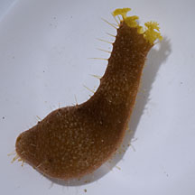
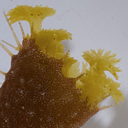
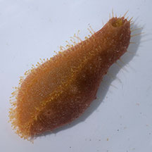

|
|
| sea cucumbers text index | photo index |
| Phylum Echinodermata > Class Holothuroidea |
| Kumquat
sea cucumber Actinopyga sp. Family Holothuriidae updated Oct 2016 Where seen? This small smooth reddish orange sea cucumber does resemble a kumquat! It is sometimes seen on our Southern shores among coral rubble and near reefs. Features: About 8cm long. Body oval to sausage-like, with a flat underside where the mouth is located. Colour uniformly orange, some with paler spots. Tube feet very long, slender, many emerging on the flat underside but also scattered all over the upperside. Feeding tentacles yellowish with flowery tips. It may be the same as the Actinopyga sp. in Lane's guide of which "just a single specimen was seen, from the reef slope of Sultan Shoal". |
 Pulau Hantu, Jan 12 |
 |
 Flat underside. |
| Kumquat sea cucumbers on Singapore shores |
On wildsingapore
flickr
|
| Other sightings on Singapore shores |
|
References
|